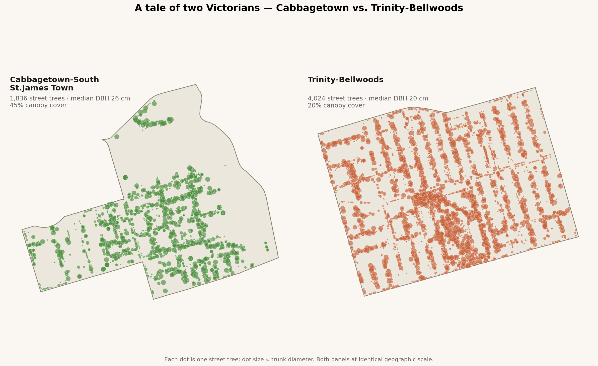
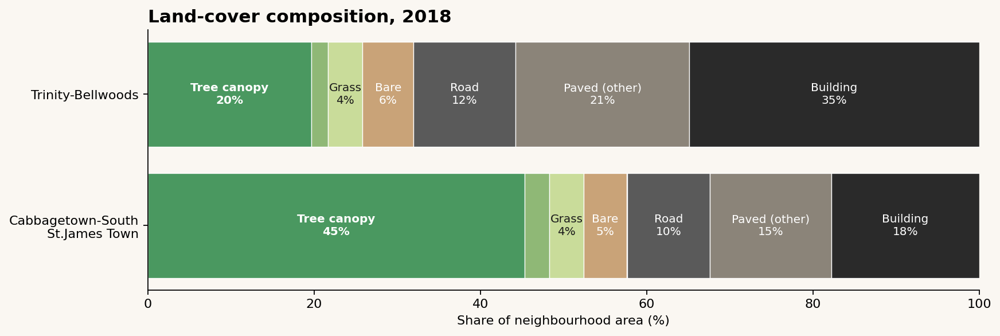

A tale of two Victorians — why Cabbagetown has twice the canopy of Trinity-Bellwoods
Cabbagetown and Trinity-Bellwoods are, on paper, the same neighbourhood. Both are downtown Toronto. Both were built in the late 1800s, on a street grid of narrow lots holding two-and-a-half storey brick Victorian rowhouses. Both were working-class neighbourhoods that gentrified through the late 20th century. Both sit squarely inside the "old city" bounded by the railway corridors. The residents of either could, without much effort, live the other's life.
One of them has 45% tree canopy cover. The other has 20%.

Here's the full comparison, drawing on 2021 census data, the city's street-tree inventory, and the 2018 LiDAR land-cover study:
Metric
Cabbagetown-SSJT
Trinity-Bellwoods
Δ
Area
1.42 km²
1.73 km²
+22%
Population (2021)
11,020
15,415
+40%
Median household income
$76,500
$92,000
+20%
Tree canopy cover, 2018
45.3%
19.7%
–56%
Street trees (city-owned)
1,836
4,024
+119%
Street trees per km²
5,041
9,101
+80%
Street trees per capita
0.17
0.26
+53%
Median street-tree DBH
26 cm
20 cm
–23%
Trees under 15 cm DBH
33%
40%
+21%
A lot of this table is counter-intuitive.
Trinity-Bellwoods has more than twice as many city-owned street trees as Cabbagetown. It has 80% more trees per square kilometre. It has 53% more trees per resident. By every measure of what the city is planting on the boulevard, Trinity-Bellwoods is better-served.
But its canopy is less than half. And its tree stock is younger — a median DBH of 20 cm vs. 26 cm, with 40% of Trinity-Bellwoods trees under 15 cm (basically saplings) compared to Cabbagetown's 33%.
The missing 25 points of canopy
To find the missing 25 percentage points of canopy, you don't look at the boulevard. You look at the land-cover composition:

Trinity-Bellwoods is 68% impervious (building + road + paved): sidewalks, driveways, garages, laneways, and most of all, buildings. Cabbagetown is 43% impervious. That 25-percentage-point impervious gap is nearly the same size as the 25-percentage-point canopy gap, and in the opposite direction — because trees need dirt.
Look at the building share specifically: 35% of Trinity-Bellwoods is building footprint, vs. 18% of Cabbagetown. Double. In a neighbourhood of the same era, the same zoning designation, the same lot grid.
Something, at some point, caused half of Trinity-Bellwoods' backyards to fill in with buildings.
What something, when
I can't prove this from the LiDAR alone, but the pattern fits a well-known story:
Cabbagetown became a Heritage Conservation District in 1997. One of the earliest in Toronto. HCD designation means demolitions require permits, infill is constrained, lot severances are practically impossible, and rear-yard additions get scrutinized. Crucially, it froze the built form in the late-1990s.
Trinity-Bellwoods never got an HCD. It gentrified starting in the early 2000s with no comparable protection. The decade that followed was Toronto's condo boom and mid-rise infill era — and Queen W, Ossington, and Dundas W all got aggressively built up through the 2010s. Backyards became coach houses. Coach houses became laneway suites. Rooflines grew third stories. Sidelot severances happened. Every one of those decisions subtracts a mature tree and replaces it, if at all, with a boulevard sapling.
The younger street-tree stock in Trinity-Bellwoods (40% under 15 cm DBH) is consistent with this: it's what you'd expect to see in a neighbourhood where mature trees keep getting lost and the city keeps replanting.
The leverage: Canopy isn't primarily a tree-planting problem. It's a built-form problem. The city can plant all the boulevard trees it likes — and in Trinity-Bellwoods it has — but if the land-use policy lets backyards fill in, net canopy goes down. Heritage designation turns out to be, among other things, canopy policy.
Cabbagetown's other tailwinds
HCD designation is probably the single biggest factor, but a few others add to it:
Eastern edge of the neighbourhood is the Don Valley. The polygon boundary runs down the ravine slope; a slice of mature valley-wall forest counts toward Cabbagetown's canopy number. Probably worth 5-8 percentage points. (Even subtracting that, Cabbagetown is still 37-40% canopy — nearly double Trinity-Bellwoods.)
Garden culture. Cabbagetown has an annual festival garden tour that's been running since 1977 — explicitly selecting for, and showcasing, the kind of homeowner who plants and protects backyard trees. Trinity-Bellwoods has no equivalent tradition.
Riverdale Park West sits just inside the Cabbagetown-South St.James Town polygon at the ravine edge. More park canopy, more total canopy number.
But none of those individually account for a 25-point gap. The built-form divergence does.
The sign of things to come
Here's the uncomfortable implication. Trinity-Bellwoods' median street-tree DBH of 20 cm tells you the boulevard stock is young — lots of replacement, lots of 2010s plantings. Those trees will grow. In 30 years, with no further building, Trinity-Bellwoods would mature into something closer to Cabbagetown's canopy — if the backyards stayed put.
They probably won't. Gentle-density reform in Toronto (as-of-right fourplexes, laneway suites, rear-yard coach houses) is actively encouraging the exact backyard densification that has already depressed Trinity-Bellwoods' canopy. The city's canopy target is 40% by 2050 — up from today's 26%. Every backyard that turns into a coach house is a ~50-100 m² subtraction from the long-term canopy budget.
You can argue for or against that tradeoff. Laneway suites are genuinely good for housing supply and they're one of the most livable forms of missing middle. But we should be honest that they come with a canopy cost, and that Cabbagetown — the neighbourhood that didn't densify its backyards — is the result we're implicitly trading away elsewhere.
If you love Cabbagetown for the trees, you love it partly because 1997 happened.